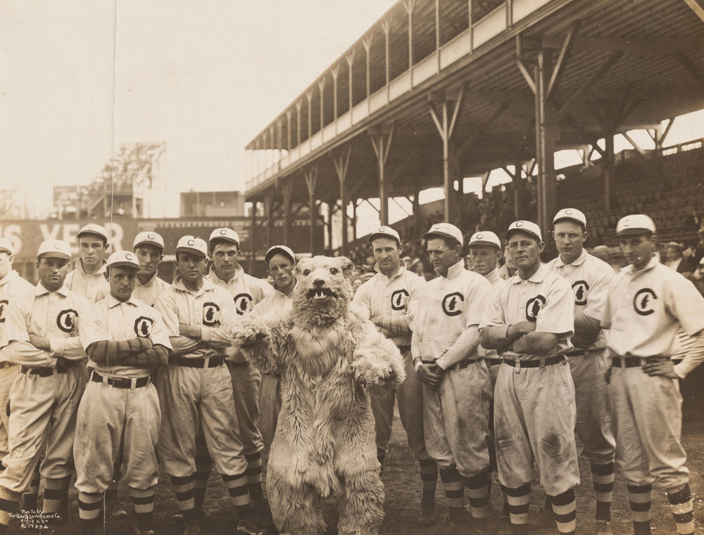
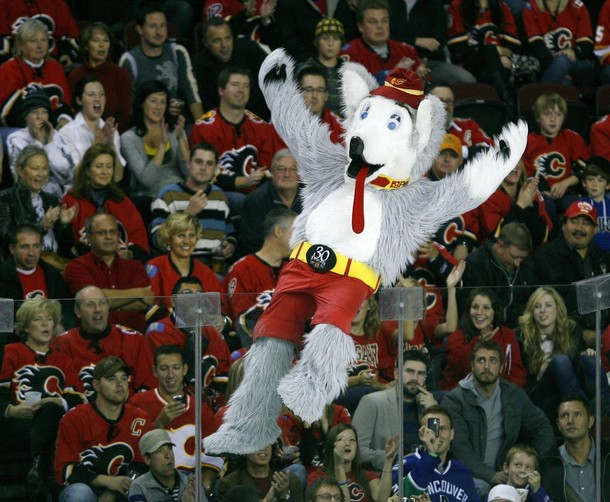
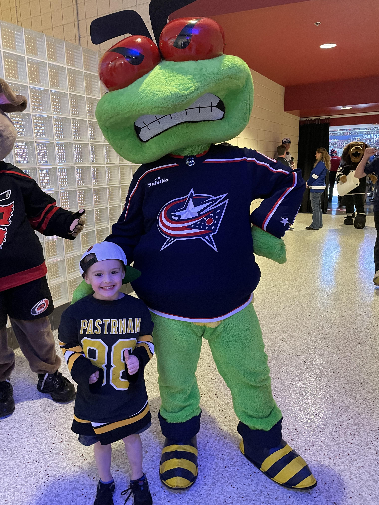
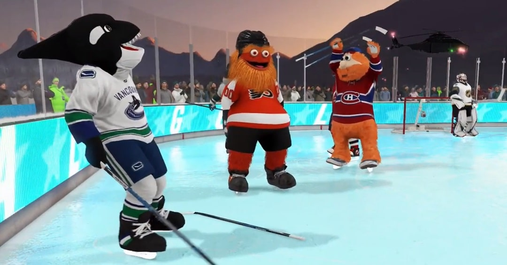

The History and Evolution of NHL Mascots
Mascots play an essential role in most major sports, not only through their energizing and exciting personas that can ignite a fanbase, but also via countless marketing opportunities (including merchandising, licensing, and advertising) that can yield large profits for major sporting organizations. Mascots can reflect the cultures of different communities, some telling a rich story about the history of a city, and ultimately allowing players and fans to feel united in their conquest for athletic greateness.
Mascots in team sports started in 1908 with the Chicago Cubs.
In hockey, team mascots began popping up in the 80's, but weren't very common among franchises until the 90's. The first official mascot was Harvey the Hound of the Calgary Flames, who built his iconic brand through crazy stunts and funny bits, often poking fun at the opposing team.
At an NHL game, a major duty of the team mascot is to walk around the different sections of the stadium and interact with the fans, ensuring that spirits and morale are always as high as possible throughout the duration of the game.
Mascots are so popular that they are even featured in the EA Sports NHL video game series, where one can play with their favorite mascots.